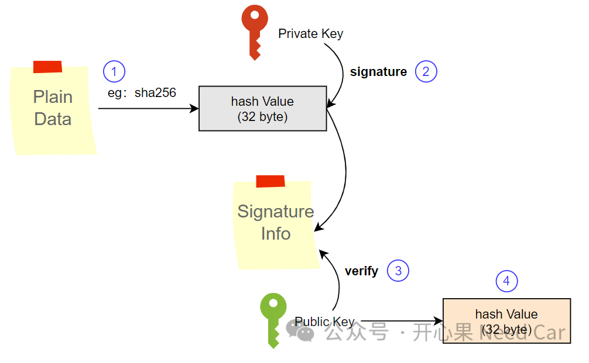
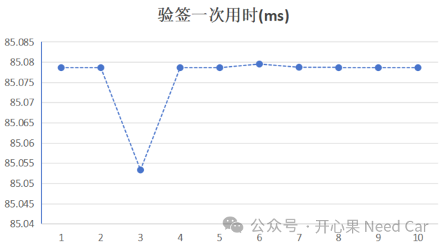
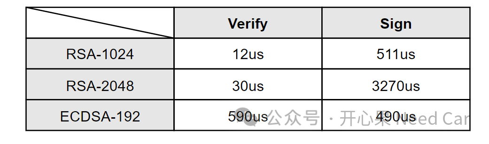

提到ECC（Elliptic Curve Cryptography，椭圆曲线密码学），自然就联想到非对称加密算法。随着车辆信息安全的要求越来越高，安全等级更高的密码学算法也越来越广泛的被使用，其中，ECC就是一个代表。本文，聊一聊ECC相关话题，主要内容如下：
ECC在椭圆曲线上选取两点，通过点和点之间的计算，实现加密、数字签名和密钥交换等功能，它是一种公钥加密技术。相比于RSA等公钥密码技术，ECC的主要优势：相同安全级别工况下，可以使用更短的密钥，eg：256 Bit的ECC密钥提供的安全等级近似3072 Bit的RSA密钥安全等级。而ECDSA（Elliptic Curve Digital Signature Algorithm）是一种使用椭圆曲线密码学作为基础数学结构的数字签名算法。ECDSA主要用来验证信息的完整性和有效性，由对应私钥的签名方生成。ECC包含一对密钥：公钥、私钥。公钥主要用于加密或验签，而私钥主要用于解密或生成签名。汽车嵌入式中，往往关注验签操作。
（一）密钥生成原理
ECC密钥生成过程：
首先，选择一条椭圆曲线，然后选择一个已知曲线上的基点G。其中，曲线有多种，eg：SECP256K1、SECP192R1、SECP256R1......
之后，选择一个随机私钥（随机整数）；
最后，通过基点G乘以私钥，生成公钥。即：公钥 = 私钥 * G。
（二）密钥存储格式
ECC的公钥和私钥可以采用多种格式存储，比如：PEM格式、DER格式、PKCS#12格式等等。
- 通常，信任中心通过私钥对明文的哈希值（eg：sha256计算的哈希值）进行签名（Signature），生成数字签名信息；
- 软件程序使用对应的公钥来验证签名（Verify），以此确保消息的完整性和真实性（唯一性）。

基于TC3xx，对ECC（硬件）进行验签性能测试，一次验签大概85ms（性能取决于各家的实现情况），统计如下所示：

相比于RSA验签，ECC验签速度慢一些，参考数据如下(1)：
如上数据统计仅供参考，对于车载MCU级别芯片，速度应该还达不到上述性能。工程中，很多时候会约束控制器的启动时间，所以，在选择验签算法（eg：非对称加密算法）时，需要根据项目和使用芯片平台等因素，综合衡量。(1)http://www.360doc.com/content/20/0221/23/18005502_893773496.shtml点击下方关注，一起聊聊Autosar/嵌入式，如果需要，联系作者进群，给你更专业的解答